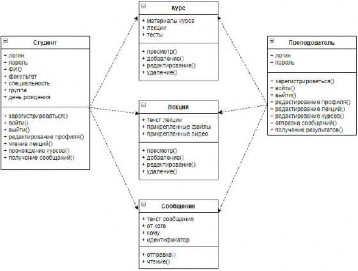
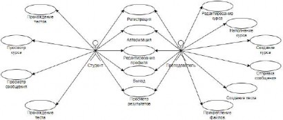
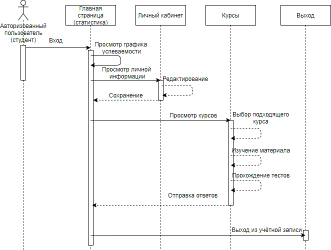
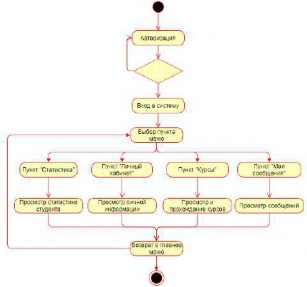
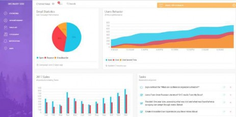
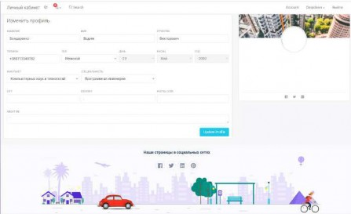

УДК 004.65
Донецкий национальный технический университет кафедра программной инженерии
Аннотация:
Бондаренко В.В., Рычка О.В. Разработка платформы для дистанционного обучения “Ordinary side”. Статья посвящена разработке программного продукта для автоматизации дистанционного образования. Выделены основные функциональные требования к собственной разрабатываемой системе дистанционного образования. Также приведён пример интерфейса системы.
Annotation:
Bonarenko Vadim, Rycka Olga. Development of a platform for distance learning "Ordinary side". The article is devoted to the development of a software product for the automation of distance education. The main functional requirements for the own distance education system being developed are highlighted. An example of the system interface is also provided.
На данный момент роль информационных технологий в жизни человека значительно увеличилась. Социально-экономические процессы привели к значительным изменениям в сфере образования, что, в свою очередь, требует создания современной концепции образования с использованием средств информатизации
Цель работы заключается в разработке программного продукта, позволяющего студентам изучать лекционный материал предметов по их специальности, проходить тесты после изучения материала, смотреть информационные видео по этим материалам.
Целью создания данной системы дистанционного образования, является содействие всестороннему развитию студентов при помощи облегчения усваивания материала, не покидая стен своей комнаты. Кроме изучения предметов, важной является методика данного типа обучения, которая рассчитана на то, чтобы учащиеся не тратили время на поиск необходимой информации, на которую уходит большое количество времени.
Система Дистанционного Обучения (СДО) – это система из информационных компонентов и процессов, которая помогает качественно обучать и обучаться на расстоянии и без очных занятий. Проще говоря, СДО – это университет, в котором рутинные и сложные процессы выполняет машина [1].
Важный элемент организации удалённого образования - самообучение. Общепринятое обучение осуществляется следующим образом: слушатель приходит на лекцию, получает теоретический материал, далее на практических работах отрабатывает конкретные практические навыки. Удалённое обучение состоит в самостоятельном изучении тем учебного пособия, выполнении контрольных заданий и консультировании с преподавателем с помощью чата или видео-звонка. При данном обучении нет прямого, очного контакта преподавателя с учащимися.
Для создания системы дистанционного обучения требуется понимание современных процессов обучения. Государственные образовательные учреждения используют для организации обучения закон ДНР «Об образовании». Процесс обучения можно разделить на три части: получение теоретических знаний, получение практических навыков, контроль полученных знаний и навыков. Обучение включает аудиторные занятия (лекции, семинары,
упражнения, практические и лабораторные занятия) и самостоятельную подготовку. Контроль полученных знаний и умений осуществляется путем сдачи зачетов и экзаменов. В качестве промежуточного контроля проводится тестирование [2].
Важным этапом в развитии образования является оптимизация времени, отводимого на самостоятельную подготовку. Современные студенты во время подготовки к занятиям все меньше времени проводят в библиотеках и читальных залах учебного заведения, где бы они имели возможность общения с преподавателями. Все чаще учащиеся используют Интернет для получения информации по различным темам. Задачей разработчика системы дистанционного обучения является совмещение традиционных способов обучения с современными средствами получения информации. Этим можно облегчить работу, как студентов, так и преподавателей.
Вопрос автоматизации рутинных задач человека на сегодня является ключевым в сфере информационных технологий. Несмотря на разнообразный выбор существующих приложений, не все из них являются оптимальными для пользователя, поэтому актуальность реализации системы дистанционного образования для университета является бесспорной [3].
Рассмотрим ряд типичных проблем и недостатков таких приложений:
− большинство качественных приложений поставляются пользователю на платной основе;
− перегруженность функциональностью, или, наоборот, нехватка важных возможностей приложения;
− ограниченность функционала до приобретения платного пакета;
− низкое качество бесплатного ПО;
− недружественный интерфейс;
− сложная для понимания структура приложения, что затрудняет процесс использования неопытных пользователей;
− отсутствие некоторых ролей пользователя;
− отсутствие возможности выбора либо добавления типов лекций.
Во всем разнообразии средств организации удалённого обучения можно обратить внимание на следующие типы приложений:
Authoring Packages (авторские программы) - представляют собой, в первую очередь небольшое количество локальных разработок, направленных на освоение специальных дисциплин или разделов наук. Наставник здесь составляет и формирует учебные материалы. Такой процесс, на первый взгляд, является незаменимым средством для активизации заинтересованности студентов во время лекционных занятий и практических работ; с другой точки зрения, отсутствие обратной связи студента и преподавателя снижает эффективность их использования;
Learning Management Systems - LMS (системы контроля обучением) - разработаны для контроля большого количества студентов. Одни нацелены на применение в учебных заведениях, другие - на корпоративное обучение. Их общей особенностью является то, что они позволяют отслеживать продвижение пользователей, хранить их прогресс успеваемости, подчитывать статистику прохождения курсов, а также определять время, потраченное на прохождение курса. Эти системы только для авторизованных пользователей. Авторизованным пользователям автоматически рассылается информация о текущих событиях и необходимой отчетности. Студенты могут собираться в группы. Так же, здесь есть возможность контроля знаний и онлайн общения;
Learning Content Management Systems - LCMS (системы управления учебным контентом) - совмещают в себе ресурсы двух систем управления, которые были описаны выше, и становятся в настоящее время многообещающими с точки зрения организации
дистанционного образования. Совокупность управления больших групп студентов, с возможностей быстрой создания курсов и присутствие дополнительных модулей позволяет системам решать задачи организации обучения как в крупных образовательных структурах, так и в небольших учебных учреждениях.
Системы управления обучением характеризуются высоким уровнем интерактивности и позволяют участвовать в процессе обучения людям, находящимся в разных странах и имеющим выход в интернет. С их помощью процесс обучения можно осуществлять в режиме реального времени [3].
Есть ряд систем LMS, осуществляющие изучение при помощи сети Интернет. Рассмотрим главные программные платформы для организации дистанционного образования:
ILIAS - свободная программа для дистанционного обучения, которая даёт возможность создавать практические и лекционные материалы для дистанционного образования, а также организовывать общение между преподавателями и студентами, осуществлять оценку знаний и тестирование. ILIAS поддерживает русский язык. К несчастью, данная система не отличается хорошей скоростью интегрирования, то есть функционал настолько обширен, что не понятно, что из это тебе пригодится, а что нет. Зато система обладает красивым интерфейсом, который поддерживает большое количество настроек. Пользователю для работы необходимо учиться работать с ней, либо адаптировать ее под себя.
ATutor – свободная платформа обучения, аналогичная системе ILIAS от канадских разработчиков. Интерфейс системы более понятен простому ряду пользователей. Система также поддерживает русский язык. Однако вся документация написана на английском языке.
OpenELMS - это совместный проект, деятельность которого направлена на организацию и внедрение системы дистанционного обучения для использования в коммерческих и образовательных организациях. Данная платформа представляет собой свободно распространяемый программный продукт. Программное обеспечение LMS OpenELMS является как комплексным, так и принципиально легким в использовании.
Dokeos – этот программный продукт находится в свободном доступе, который используют зарубежные компании, образовательные организации и университеты. Данная платформа создана для организации платформ дистанционного образования. Подойдет она больше подготовительным организациям, чем университетам, так как ориентирована на людей с профессиональной подготовкой, например, на персонал предприятия [4].
При выборе СУБД учитывалось требование заказчика обеспечить низкую стоимость владения Web-приложения.
СУБД MySQL, обеспечивает лучшие характеристики, поэтому выбрана именно она в качестве сервера баз данных Web-приложения.
В настоящее время для разработки динамических сайтов широко применяются такие технологии Web-программирования, как ASP.NET, Perl и PHP.
Был выбран язык PHP версии 7.х в качестве основного языка программирования Web- приложения.
В качестве среды разработке Web-приложения использована локальная среда разработки PHP – Open Server.
На рисунке 1 представлена диаграмма классов для будущей системы дистанционного образования.

Рисунок 1 – Диаграмма классов
На рисунке 2 представлена диаграмма вариантов использования.

Рисунок 2 – Диаграмма вариантов использования
На рисунке 3 представлена диаграмма последовательности программного продукта.

Рисунок 3 – Диаграмма последовательности программного продукта На рисунке 4 представлена диаграмма состояний программного продукта.

Рисунок 4 – Диаграмма состояний
На рисунке 5 представлена первая страница программного продукта со статистикой.

Рисунок 5 – Страница со статистикой На рисунке 6 представлена страница личного кабинета.

Рисунок 6 – Страница личного кабинета.
Таким образом, благодаря проведенному объектно-ориентированному анализу и объектно-ориентированному проектированию получены концептуальные классы, которые на
стадии реализации преобразуются в программные классы разрабатываемой обучающей системе. Благодаря диаграмме использования были определены основные операции, которые будут реализованы в программе с помощью методов класса. Кроме того, благодаря диаграмме классов определены зависимости между классами приложения, которые будут отражены в программном продукте. В диаграмме последовательности отражена логика программы и жизненные циклы существования объектов программного продукта.
Имея в наличии разработанную концептуальную модель и диаграммы, написанные на унифицированном языке моделирования, можно приступать к реализации программного продукта
В заключение необходимо отметить, что именно дистанционное образование является составляющей частью очного и заочного обучения, а также может выступать как самостоятельная форма обучения.
Дистанционное обучение - это обучение на расстоянии. Только не думайте, что дистанция огромного размера позволяет учиться спустя рукава. Жесткая отчетность - на этом держится вся система дистанционного образования.
Однако онлайн-образование открывает человеку неограниченные возможности для самообразования и получения обширного спектра профессиональных навыков, которые наиболее востребованы в текущей экономической среде. Данный формат обучения развивает дисциплину, повышает интеллектуальный уровень и позволяет получить востребованную профессию вне зависимости от возраста, места проживания, занятости и имеющихся навыков. Также дистанционные технологии помогают преподавателю повысить качество образования по предмету, сформировать универсальные учебные действия в современной цифровой коммуникационной среде.
Таким образом, дистанционное образование может рассматриваться как самостоятельная форма обучения XXI в., а также как инновационный компонент очного и заочного обучения.
Васильев В. Дистанционное обучение : деятельностный подход // Дистанционное и виртуальное обучение. – 2004. - N 2. - С. 6-7.
Что такое СДО – Режим доступа: https://www.ispring.ru/elearning-insights/chto-takoe- sistema-distantsionnogo-obucheniya/ - Загл. с экрана.
Авраамов Ю. С. Практика формирования информационно-образовательной среды на основе дистанционных технологий // Телекоммуникации и информатизация образования. – 2004. - N 2. - С. 40-42.
Абдуллаев С. Г. Оценка эффективности системы дистанционного обучения // Телекоммуникации и информатизация образования. – 2007. - N 3. - С. 85-92.